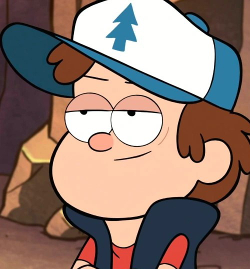
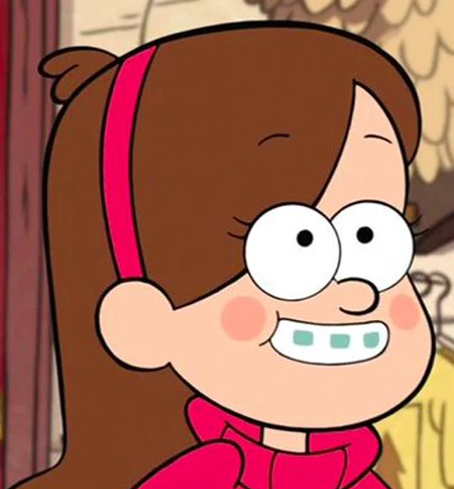

Dipper Pines
Un chico de 12 años con un gran intelecto y una interminable curiosidad. Antisocial, algo torpe, pero de buen corazón, encuentra un diario en sus vacaciones de verano en Gravity Falls y decide resolver los misterios que envuelven al pueblo.
Mabel Pines
Hermana melliza de Dipper. Una niña alegre y colorida. Aunque puede llegar a ser muy impulsiva a veces, es bastante creativa y aventurera. Quiere ayudar a su hermano a resolver los misterios del pueblo de Gravity Falls, además de encontrar a su “amor de verano”.
Grunkle Stan

Tío-abuelo de los mellizos Pines. Un hombre anciano sin escrúpulos a la hora de hacer negocios pero que tiene sus límites morales, sobre todo en lo que respecta a su familia. Gruñón, descarado y ambicioso, es dueño de la Cabaña del Misterio, una trampa para turistas donde muestra monstruos falsos. Stan parece desconocer las rarezas del pueblo, pero en realidad esconde muchos secretos...